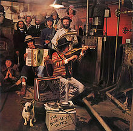

Toggle navigation
Bob Dylan Lyrics
Downloads
All Songs
1960s
Bob Dylan
The Freewheelin' Bob Dylan
The Times They Are A-Changin'
Another Side of Bob Dylan
Bringing It All Back Home
Highway 61 Revisited
Blonde on Blonde
Bob Dylan's Greatest Hits
John Wesley Harding
Nashville Skyline
1970s
Self Portrait
New Morning
Bob Dylan's Greatest Hits, Volume II
Pat Garrett & Billy the Kid
Dylan
Planet Waves
Before the Flood
Blood on the Tracks
The Basement Tapes
Desire
Hard Rain
1980s
1990s
2000s
2010s
Search
The Basement Tapes

Released: June 26, 1975
Length: 76:41
Producer(s): Bob Dylan, the Band
Label: Columbia
Side 1
Odds and Ends
Million Dollar Bash
Goin' to Acapulco
Lo and Behold!
Clothes Line Saga
Apple Suckling Tree
Side 2
Please, Mrs. Henry
Tears of Rage
Too Much of Nothing
Yea! Heavy and a Bottle of Bread
Crash on the Levee (Down in the Flood)
Tiny Montgomery
Side 3
You Ain't Goin' Nowhere
Don't Ya Tell Henry (sung by Levon Helm)
Nothing Was Delivered
Open the Door, Homer
Long Distance Operator (sung by Richard Manuel)
This Wheel's on Fire
Side 4